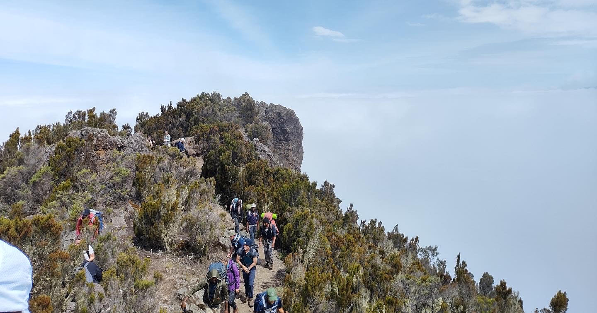
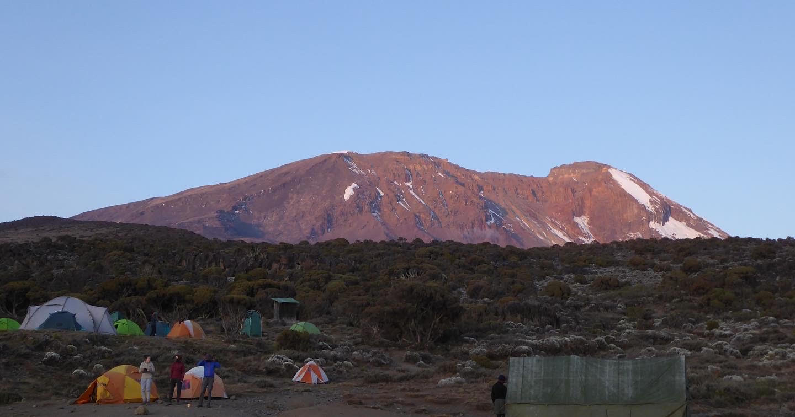
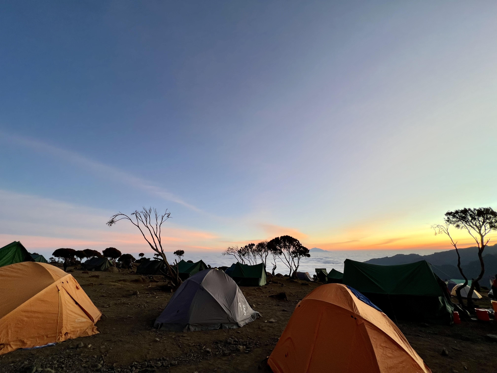
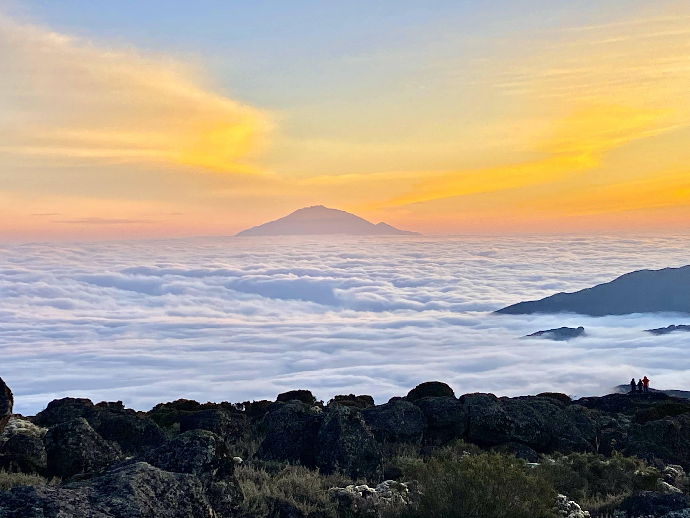
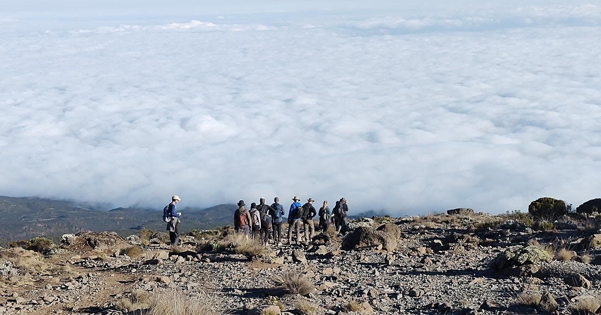
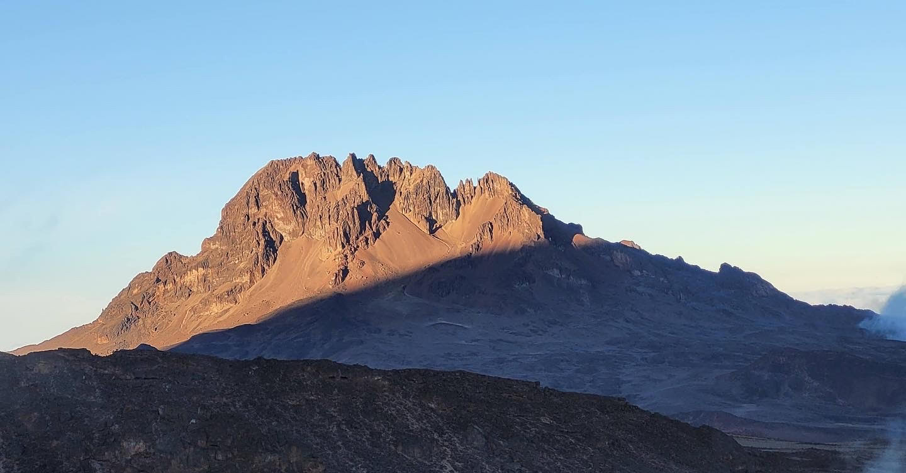
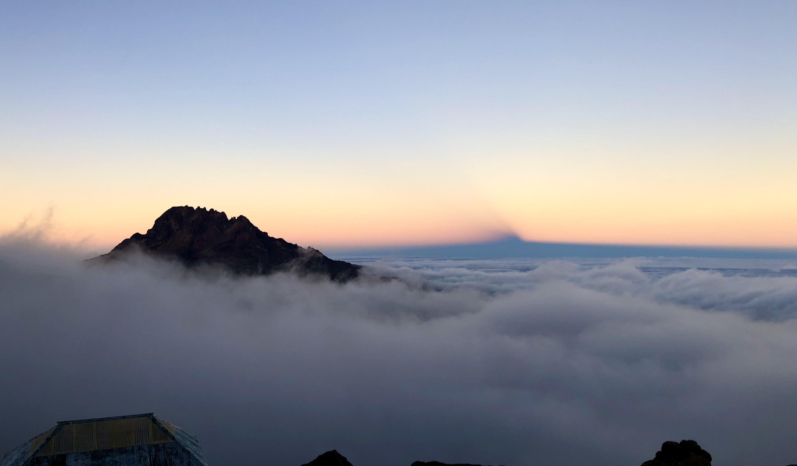

5 / 10

Day 2 - finally out of the clouds!
8 / 10

Day 2 - Shira Camp - 3 847m - You can't miss it!
4 / 10

Day 2 - Shira Camp - 3 847m
3 / 10

Day 2 - Sunset at Shira Camp - 3 847m - view of Mount Meru in Arusha (4 566 m)
6 / 10

Day 3 - Taking in the view on our way tio Lava Tower for lunch
9 / 10

Day 4 - Barafu Camp - 4 600m - A view of the mountain's second peak, Mawenzi peak (5149m)
7 / 10

Day 4 - The calm before the storm - sunset at Barafu Camp before tomorow's gruesome ascent
10 / 10

Day 5 - circa. 6.30am - summit ascent- my attempt at looking excited after walking throughout the night at -8 degrees
1 / 10

Day 5 - Summit!
2 / 10

Day 5 - standing on the 'roof of Africa' at 5895m